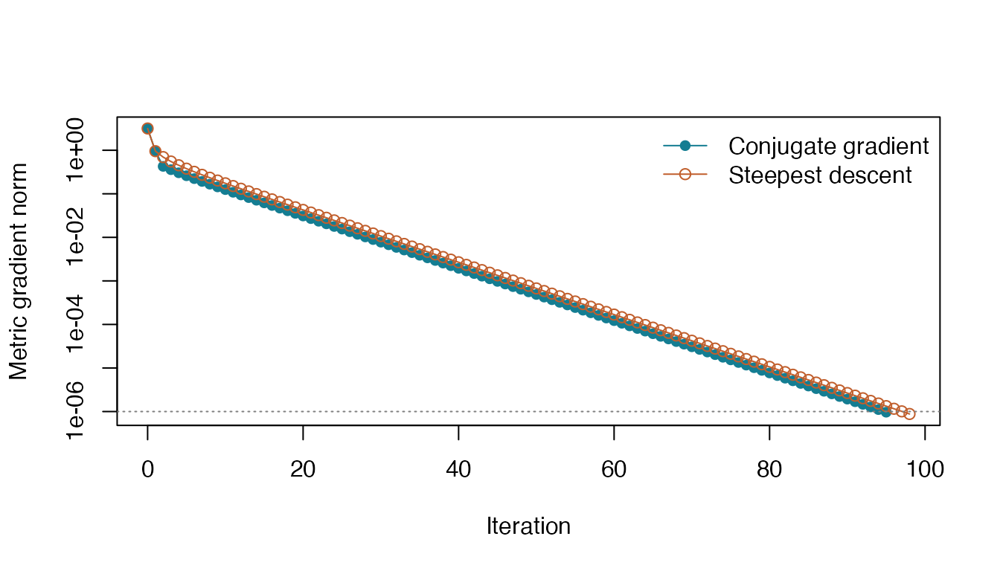

riemtorch minimizes objectives that you write with R
torch, while keeping the unknowns on a chosen manifold. A typical
workflow has three ingredients: the geometry, a scalar loss function,
and a feasible starting point. The package obtains derivatives with
torch and uses the geometry to turn them into Riemannian optimization
steps.
This tutorial finds the unit vector most aligned with a given direction. The answer is known, so we can check the objective, the constraint, and the final point independently.
Installation
Install the R torch dependency and its numerical runtime once, then install riemtorch from GitHub. These commands are setup instructions; the documentation build does not run them.
install.packages(c("remotes", "torch"))
if (!torch::torch_is_installed()) torch::install_torch()
remotes::install_github("kisungyou/riemtorch")To install a local checkout instead, open
riemtorch.Rproj and use Build → Install
Package in RStudio. If riemtorch is already installed, start
with the next section. Reinstall the package after changing its source
code to use those changes in a fresh R session.
Define the geometry and objective
Let . We solve
The feasible set is the two-dimensional sphere embedded in
three-dimensional space, specified by manifold.sphere(3).
The objective must return one real scalar torch tensor, with the same
precision and device as the point.
library(torch)
library(riemtorch)
sphere <- manifold.sphere(3)
a <- torch_tensor(c(1, 2, 3), dtype = torch_float64())
problem <- riem.problem(
sphere,
fn = function(x, data) -torch_sum(x * data),
data = a,
label = "Find an aligned unit vector",
required_operations = "basic"
)
x0 <- torch_tensor(c(0, 1, 0), dtype = torch_float64())
riem.belongs(sphere, x0)
#> [1] TRUEThe data argument registers a with the
problem. The execution driver can then move it together with the initial
point when a run uses a different device. Avoid capturing device-bound
tensors invisibly inside the loss function. Here the loss needs only
basic tensor operations, so that is the compatibility requirement we
declare. Leave required_operations unset for a conservative
probe when the needs of a custom loss are unknown.
Solve and inspect the result
For reproducible output, this article explicitly runs on the CPU in double precision. Automatic device selection is explained below.
fit <- riem.optimize(
problem, x0,
method = "conjugate_gradient",
control = list(max_iterations = 100, gradient_tolerance = 1e-6),
device = "cpu"
)
fit
#> <riem_fit> conjugate_gradient on sphere
#> Objective: -3.7416574 | gradient norm: 9.668e-07
#> Termination: converged_gradient | iterations: 95The returned point is available in fit$point. Check both
the termination reason and the constraint: reaching an iteration budget
does not mean the gradient tolerance was met. For this example the exact
minimizer is
,
and the minimum is
.
exact <- a / a$norm()
data.frame(
termination = fit$termination,
on_sphere = riem.belongs(sphere, fit$point),
gradient_norm = fit$gradient_norm,
objective_gap = fit$objective + a$norm()$item(),
point_error = (fit$point - exact)$norm()$item()
)
#> termination on_sphere gradient_norm objective_gap point_error
#> 1 converged_gradient TRUE 9.668449e-07 1.247891e-13 2.584002e-07
as.numeric(fit$point)
#> [1] 0.2672613 0.5345223 0.8017839
fit$evaluations
#> $fn
#> [1] 285
#>
#> $gradient
#> [1] 96
#>
#> $hessian
#> [1] 0
#>
#> $residual
#> [1] 0
#>
#> $adjoint
#> [1] 0
#>
#> $jvp
#> [1] 0
#>
#> $terms
#> [1] 0converged_gradient means the metric gradient norm met
the requested tolerance. max_iterations,
stopped_small_step, and line_search_failed
describe different stopping conditions and should be interpreted
alongside the objective and residuals. The evaluation counts help
distinguish iteration counts from actual objective and derivative
work.
Compare a second solver
The problem and initial point can be reused unchanged. Here we compare conjugate gradient with steepest descent on exactly the same small objective.
steepest <- riem.optimize(
problem, x0,
method = "steepest_descent",
control = list(max_iterations = 100, gradient_tolerance = 1e-6),
device = "cpu"
)
fits <- list("Conjugate gradient" = fit, "Steepest descent" = steepest)
data.frame(
solver = names(fits),
iterations = vapply(fits, function(z) z$iterations, numeric(1)),
objective = vapply(fits, function(z) z$objective, numeric(1)),
gradient_norm = vapply(fits, function(z) z$gradient_norm, numeric(1)),
termination = vapply(fits, function(z) z$termination, character(1)),
row.names = NULL
)
#> solver iterations objective gradient_norm termination
#> 1 Conjugate gradient 95 -3.741657 9.668449e-07 converged_gradient
#> 2 Steepest descent 98 -3.741657 8.792728e-07 converged_gradient
history_xy <- function(z) {
data.frame(
iteration = vapply(z$history, function(h) h$iteration, numeric(1)),
gradient = vapply(z$history, function(h) h$gradient_norm, numeric(1))
)
}
paths <- lapply(fits, history_xy)
all_gradients <- unlist(lapply(paths, function(z) pmax(z$gradient, 1e-12)))
plot(paths[[1]]$iteration, pmax(paths[[1]]$gradient, 1e-12),
type = "o", pch = 16, col = "#147D92", log = "y",
xlim = range(unlist(lapply(paths, function(z) z$iteration))),
ylim = range(all_gradients), xlab = "Iteration",
ylab = "Metric gradient norm")
lines(paths[[2]]$iteration, pmax(paths[[2]]$gradient, 1e-12),
type = "o", pch = 1, col = "#C15F2D")
abline(h = 1e-6, lty = 3, col = "grey50")
legend("topright", legend = names(fits), col = c("#147D92", "#C15F2D"),
pch = c(16, 1), lty = 1, bty = "n")
Both methods use the same objective and initial point. This small example illustrates how to read a history; it is not a performance benchmark.
Check derivatives before a larger run
Check the geometry and the loss at the initial point, away from the solution. The gradient checker compares the directional derivative with finite differences. It also records a Taylor remainder over several step sizes.
direction <- torch_tensor(c(1, 0, 0), dtype = torch_float64())
geometry_check <- riem.check.manifold(sphere, x0, direction)
gradient_check <- riem.check.gradient(problem, x0, direction)
geometry_check$checks[, c("check", "error", "status")]
#> check error status
#> 1 metric_duality 0e+00 pass
#> 2 metric_symmetry 0e+00 pass
#> 3 positive_metric 0e+00 pass
#> 4 tangent_membership 0e+00 pass
#> 5 retraction_feasibility 0e+00 pass
#> 6 retraction_derivative 5e-06 pass
gradient_check$checks[, c("check", "error", "status")]
#> check error status
#> 1 directional_gradient 2.987943e-12 pass
gradient_check$curves
#> step error slope
#> 1 1.000000e-01 1.042190e-02 NA
#> 2 1.930698e-02 3.762526e-04 2.019454
#> 3 3.727594e-03 1.392071e-05 2.004546
#> 4 7.196857e-04 5.181336e-07 2.000907
#> 5 1.389495e-04 1.930832e-08 2.000176
#> 6 2.682696e-05 7.196953e-10 2.000034
#> 7 5.179475e-06 2.682684e-11 2.000011
#> 8 1.000000e-06 9.999491e-13 2.000028A pass is evidence at the tested point and direction,
not a proof for the whole problem. Repeat checks at several points when
adding an analytic derivative or a custom geometry. See Checking geometry and derivatives
for Hessian and adjoint diagnostics.
Choose CPU or automatic GPU discovery
Managed runs select one compatible device and retain it for the whole
run. With no explicit device argument, the order of precedence is the R
option riemtorch.device, the environment variable
RIEMTORCH_DEVICE, then automatic discovery. Discovery tries
visible CUDA devices, compatible MPS, then CPU, preserving the requested
precision. The default double precision can rule out an accelerator that
only supports single precision for the required operations.
fit$execution[c("device", "dtype", "reason")]
#> $device
#> [1] "cpu"
#>
#> $dtype
#> [1] "float64"
#>
#> $reason
#> [1] "explicit selection: passed operations: basic"
riem.devices(dtype = "float64", operations = "basic")
#> device type index available compatible
#> 1 mps mps NA TRUE FALSE
#> 2 cpu cpu NA TRUE TRUE
#> reason
#> 1 Cannot convert a MPS Tensor to float64 dtype as the MPS framework doesn't support float64. Please use float32 instead. Exception raised from empty_mps at /Users/runner/work/libtorch-mac-m1/libtorch-mac-m1/pytorch/aten/src/ATen/mps/EmptyTensor.cpp:45 (most recent call first): frame #0: c10::Error::Error(c10::SourceLocation, std::__1::basic_string<char, std::__1::char_traits<char>, std::__1::allocator<char>>) + 56 (0x1094a2978 in libc10.dylib) frame #1: at::detail::empty_mps(c10::ArrayRef<long long>, std::__1::optional<c10::ScalarType>, std::__1::optional<c10::Layout>, std::__1::optional<c10::Device>, std::__1::optional<bool>, std::__1::optional<c10::MemoryFormat>) + 1184 (0x152e835dc in libtorch_cpu.dylib) frame #2: at::native::empty_strided_mps(c10::ArrayRef<long long>, c10::ArrayRef<long long>, std::__1::optional<c10::ScalarType>, std::__1::optional<c10::Layout>, std::__1::optional<c10::Device>, std::__1::optional<bool>) + 140 (0x152ea06c4 in libtorch_cpu.dylib) frame #3: at::_ops::empty_strided::redispatch(c10::DispatchKeySet, c10::ArrayRef<c10::SymInt>, c10::ArrayRef<c10::SymInt>, std::__1::optional<c10::ScalarType>, std::__1::optional<c10::Layout>, std::__1::optional<c10::Device>, std::__1::optional<bool>) + 172 (0x14f375304 in libtorch_cpu.dylib) frame #4: at::_ops::empty_strided::call(c10::ArrayRef<c10::SymInt>, c10::ArrayRef<c10::SymInt>, std::__1::optional<c10::ScalarType>, std::__1::optional<c10::Layout>, std::__1::optional<c10::Device>, std::__1::optional<bool>) + 340 (0x14f374e60 in libtorch_cpu.dylib) frame #5: at::native::_to_copy(at::Tensor const&, std::__1::optional<c10::ScalarType>, std::__1::optional<c10::Layout>, std::__1::optional<c10::Device>, std::__1::optional<bool>, bool, std::__1::optional<c10::MemoryFormat>) + 2280 (0x14eb96c94 in libtorch_cpu.dylib) frame #6: at::_ops::_to_copy::redispatch(c10::DispatchKeySet, at::Tensor const&, std::__1::optional<c10::ScalarType>, std::__1::optional<c10::Layout>, std::__1::optional<c10::Device>, std::__1::optional<bool>, bool, std::__1::optional<c10::MemoryFormat>) + 172 (0x14f03f72c in libtorch_cpu.dylib) frame #7: at::_ops::_to_copy::redispatch(c10::DispatchKeySet, at::Tensor const&, std::__1::optional<c10::ScalarType>, std::__1::optional<c10::Layout>, std::__1::optional<c10::Device>, std::__1::optional<bool>, bool, std::__1::optional<c10::MemoryFormat>) + 172 (0x14f03f72c in libtorch_cpu.dylib) frame #8: c10::impl::wrap_kernel_functor_unboxed_<c10::impl::detail::WrapFunctionIntoFunctor_<c10::CompileTimeFunctionPointer<at::Tensor (c10::DispatchKeySet, at::Tensor const&, std::__1::optional<c10::ScalarType>, std::__1::optional<c10::Layout>, std::__1::optional<c10::Device>, std::__1::optional<bool>, bool, std::__1::optional<c10::MemoryFormat>), &torch::autograd::VariableType::(anonymous namespace)::_to_copy(c10::DispatchKeySet, at::Tensor const&, std::__1::optional<c10::ScalarType>, std::__1::optional<c10::Layout>, std::__1::optional<c10::Device>, std::__1::optional<bool>, bool, std::__1::optional<c10::MemoryFormat>)>, at::Tensor, c10::guts::typelist::typelist<c10::DispatchKeySet, at::Tensor const&, std::__1::optional<c10::ScalarType>, std::__1::optional<c10::Layout>, std::__1::optional<c10::Device>, std::__1::optional<bool>, bool, std::__1::optional<c10::MemoryFormat>>>, at::Tensor (c10::DispatchKeySet, at::Tensor const&, std::__1::optional<c10::ScalarType>, std::__1::optional<c10::Layout>, std::__1::optional<c10::Device>, std::__1::optional<bool>, bool, std::__1::optional<c10::MemoryFormat>)>::call(c10::OperatorKernel*, c10::DispatchKeySet, at::Tensor const&, std::__1::optional<c10::ScalarType>, std::__1::optional<c10::Layout>, std::__1::optional<c10::Device>, std::__1::optional<bool>, bool, std::__1::optional<c10::MemoryFormat>) + 1232 (0x15162b960 in libtorch_cpu.dylib) frame #9: at::_ops::_to_copy::call(at::Tensor const&, std::__1::optional<c10::ScalarType>, std::__1::optional<c10::Layout>, std::__1::optional<c10::Device>, std::__1::optional<bool>, bool, std::__1::optional<c10::MemoryFormat>) + 348 (0x14f03f3ec in libtorch_cpu.dylib) frame #10: at::_ops::to_dtype_layout::call(at::Tensor const&, std::__1::optional<c10::ScalarType>, std::__1::optional<c10::Layout>, std::__1::optional<c10::Device>, std::__1::optional<bool>, bool, bool, std::__1::optional<c10::MemoryFormat>) + 360 (0x14f20d03c in libtorch_cpu.dylib) frame #11: at::Tensor::to(c10::TensorOptions, bool, bool, std::__1::optional<c10::MemoryFormat>) const + 312 (0x1412f7a4c in liblantern.dylib) frame #12: _lantern_Tensor_to + 140 (0x1416664c0 in liblantern.dylib) frame #13: torch_tensor_cpp(SEXPREC*, Rcpp::Nullable<XPtrTorchDtype>, Rcpp::Nullable<XPtrTorchDevice>, bool, bool) + 4124 (0x11e69cddc in torchpkg.so) frame #14: _torch_torch_tensor_cpp + 164 (0x11e4b6b24 in torchpkg.so) frame #15: R_doDotCall + 1612 (0x105003a0c in libR.dylib) frame #16: bcEval_loop + 81268 (0x105053bf4 in libR.dylib) frame #17: bcEval + 592 (0x1050323d0 in libR.dylib) frame #18: Rf_eval + 556 (0x105031b6c in libR.dylib) frame #19: R_execClosure + 816 (0x105034730 in libR.dylib) frame #20: applyClosure_core + 164 (0x105033824 in libR.dylib) frame #21: R_forceAndCall + 540 (0x105033d5c in libR.dylib) frame #22: do_lapply + 1104 (0x104f8d710 in libR.dylib) frame #23: do_internal + 400 (0x105098490 in libR.dylib) frame #24: bcEval_loop + 27828 (0x105046b34 in libR.dylib) frame #25: bcEval + 592 (0x1050323d0 in libR.dylib) frame #26: Rf_eval + 556 (0x105031b6c in libR.dylib) frame #27: R_execClosure + 816 (0x105034730 in libR.dylib) frame #28: applyClosure_core + 164 (0x105033824 in libR.dylib) frame #29: Rf_eval + 1224 (0x105031e08 in libR.dylib) frame #30: do_eval + 1352 (0x105038ec8 in libR.dylib) frame #31: bcEval_loop + 27244 (0x1050468ec in libR.dylib) frame #32: bcEval + 592 (0x1050323d0 in libR.dylib) frame #33: Rf_eval + 556 (0x105031b6c in libR.dylib) frame #34: forcePromise + 232 (0x105032668 in libR.dylib) frame #35: Rf_eval + 660 (0x105031bd4 in libR.dylib) frame #36: do_withVisible + 64 (0x105039200 in libR.dylib) frame #37: do_internal + 400 (0x105098490 in libR.dylib) frame #38: bcEval_loop + 27828 (0x105046b34 in libR.dylib) frame #39: bcEval + 592 (0x1050323d0 in libR.dylib) frame #40: Rf_eval + 556 (0x105031b6c in libR.dylib) frame #41: forcePromise + 232 (0x105032668 in libR.dylib) frame #42: Rf_eval + 660 (0x105031bd4 in libR.dylib) frame #43: forcePromise + 232 (0x105032668 in libR.dylib) frame #44: getvar + 408 (0x105055a18 in libR.dylib) frame #45: bcEval_loop + 16936 (0x1050440a8 in libR.dylib) frame #46: bcEval + 592 (0x1050323d0 in libR.dylib) frame #47: Rf_eval + 556 (0x105031b6c in libR.dylib) frame #48: R_execClosure + 816 (0x105034730 in libR.dylib) frame #49: applyClosure_core + 164 (0x105033824 in libR.dylib) frame #50: Rf_eval + 1224 (0x105031e08 in libR.dylib) frame #51: do_eval + 1352 (0x105038ec8 in libR.dylib) frame #52: bcEval_loop + 27244 (0x1050468ec in libR.dylib) frame #53: bcEval + 592 (0x1050323d0 in libR.dylib) frame #54: Rf_eval + 556 (0x105031b6c in libR.dylib) frame #55: R_execClosure + 816 (0x105034730 in libR.dylib) frame #56: applyClosure_core + 164 (0x105033824 in libR.dylib) frame #57: Rf_eval + 1224 (0x105031e08 in libR.dylib) frame #58: do_begin + 400 (0x105036fd0 in libR.dylib) frame #59: Rf_eval + 1012 (0x105031d34 in libR.dylib) frame #60: R_execClosure + 816 (0x105034730 in libR.dylib) frame #61: applyClosure_core + 164 (0x105033824 in libR.dylib) frame #62: Rf_eval + 1224 (0x105031e08 in libR.dylib)
#> 2 passed operations: basic
#> model operations
#> 1 Apple Metal basic
#> 2 Apple M1 CPU basicThese alternative calls are shown without execution so that this page builds on a machine without a GPU:
# Discover a compatible device, even if an R option or environment default is set.
automatic_fit <- riem.optimize(problem, x0, device = "auto")
# Force CPU execution, including on a workstation with CUDA GPUs.
cpu_fit <- riem.optimize(problem, x0, device = "cpu")
# Use the first visible CUDA GPU; indices start at zero.
gpu_fit <- riem.optimize(problem, x0, device = "cuda:0")
# Set a session default for runs that omit the device argument.
options(riemtorch.device = "cpu")
default_cpu_fit <- riem.optimize(problem, x0)
options(riemtorch.device = NULL) # Remove the session override.An explicit unavailable or incompatible device raises an error. Selection does not silently reduce precision or switch devices in the middle of a run. The applications and devices guide covers registered tensor data and device-aware training in more detail.
Where to go next
- Example gallery: ten illustrated introductions and public-data applications.
- Data sources and reproducibility: local data, provenance, and numerical checks.
- Geometry and metrics: choose a geometry and its metric.
- Custom objectives: write losses and register tensor data.
- Deterministic optimization: solver controls and termination.
- Second-order and least-squares methods: Hessian and residual models.
- Torch training: optimize manifold-valued module parameters.